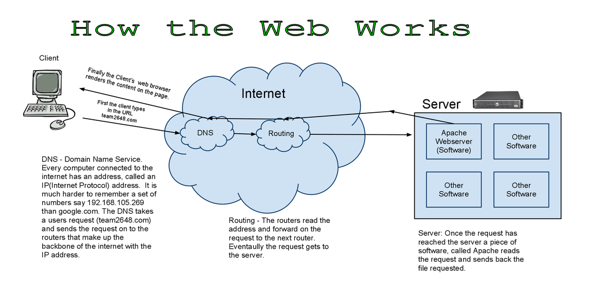

Concept Notebook
INDEX
Webpages, Documents, and Structure
The Basics of the Web and HTML
Hyper Text Markup Language is the language of the internet. HTML is interpreted by a computer's browser. These documents reside on servers. When a user accesses a webpage their computer sends an HTTP request to the server. The server finds the document and sends it across the internet where it is interpreted by the user's browser. The web is a collection of HTML documents. There are approximately 30 billion pages on the World Wide Web.
Creating a Structured Document with HTML
HTML is a markup language for describing web documents (web pages).HTML stands for Hyper Text Markup Language.A markup language is a set of markup tags. HTML documents are described by HTML tags.Each HTML tag describes different document content.
Adding CSS Style to HTML Structure
CSS stands for Cascading Style Sheets.CSS describes how HTML elements are to be displayed on screen, or in other media.It can control the layout of multiple web pages all at once, External stylesheets are stored in CSS files
Structured HTML and DOM
DevTools
The Chrome Developer Tools (DevTools for short), are a set of web authoring and debugging tools built into Google Chrome. The DevTools provide web developers deep access into the internals of the browser and their web application. We can use the DevTools to efficiently track down layout issues, set JavaScript breakpoints, and get insights for code optimization.
HTML Tree-Like Structure
The "tree-like structure" comes from the fact that HTML elements can have other elements inside of them. You can draw this relationship like a family tree. My mother had multiple children. So did her mother, and so on...
Document Object Model
When a web page is loaded, the browser creates a Document Object Model of the page.The HTML DOM is a standard object model and programming interface for HTML.
It defines:
The HTML elements as objects
The properties of all HTML elements
The methods to access all HTML elements
The events for all HTML elements
In other words: The HTML DOM is a standard for how to get, change, add, or delete HTML elements.
Text Editors
A text editor is a type of program used for editing plain text files. But when writing code, programmers use special text editors (like Sublime Text for example). These editors make the programmer's life easier. For example, some text editors will automatically generate a closing HTML tag when you write an opening tag.
Python
What is Python
Python is a widely used high-level, general-purpose, interpreted, dynamic programming language. Its design philosophy emphasizes code readability, and its syntax allows programmers to express concepts in fewer lines of code than possible in languages such as C++ or Java.
OOP in Python
Object-oriented programming (OOP) is a programming paradigm that uses abstraction to create models based on the real world. OOP uses several techniques from previously established paradigms, including modularity, polymorphism, and encapsulation. OOP promotes greater flexibility and maintainability in programming, and is widely popular in large-scale software engineering. Because OOP strongly emphasizes modularity, object-oriented code is simpler to develop and easier to understand later on. Object-oriented code promotes more direct analysis, coding, and understanding of complex situations and procedures than less modular programming techniques.
Pyhton Packages/Libraries
The term library is simply a generic term for a bunch of code that was designed with the aim of being usable by many applications. It provides some generic functionality that can be used by specific applications.